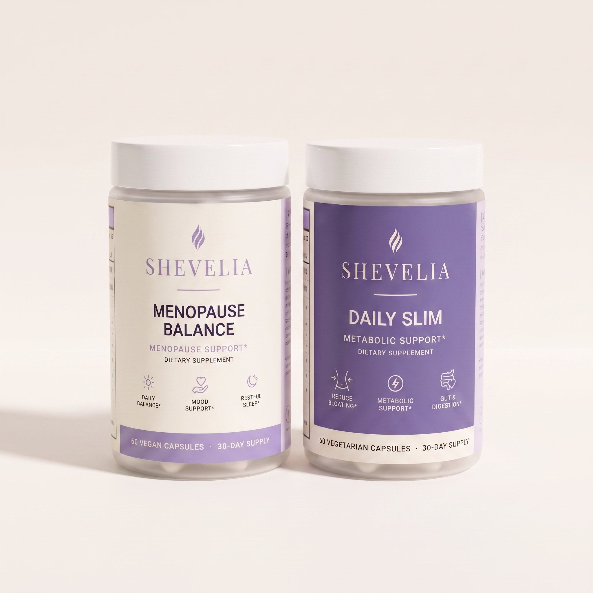

Sleep feels lighter or more interrupted
Meet Nightform, the evening direction for women whose nights no longer feel familiar.
Shop now
Sleep, body change, or the need for a steadier daily foundation. Choose one clear place to begin.
Shop nowMidlife is not one experience. Begin with the part of your day that asks the most of you right now.
Meet Nightform, the evening direction for women whose nights no longer feel familiar.
Shop nowMeet Bodyrhythm, created around daily body comfort and a non-shaming approach to change.
Shop nowMeet Essence, the simple morning starting point in the Shevelia ritual.
Shop nowThe best routine is one you can understand, repeat, and make your own.
Shop nowMorning, midday, and evening each ask something different of you. Choose one starting point or bring the three moments together.
A simple daily foundation.
Support for the daily body rhythm.
A thoughtful close to the day.
Shevelia was built around a simple idea: women in midlife deserve to feel seen, informed, and supported—with products that fit the whole life around them.
Start with an evening routine that respects what tomorrow asks of you.
Choose support that recognizes your effort without blame or pressure.
Begin with one manageable ritual that belongs to you.
Every product page will show its complete formula, directions, safety information, purchase options, and subscription terms.
Choose sleep, body change, or a daily foundation. You do not need the full ritual to begin.
Check ingredient overlap and compatibility with your clinician or pharmacist before combining supplements.
Choose the purchase option that fits your routine, with renewal and cancellation terms shown clearly.
Thoughtful support for sleep, body change, and the rhythm of everyday life.
